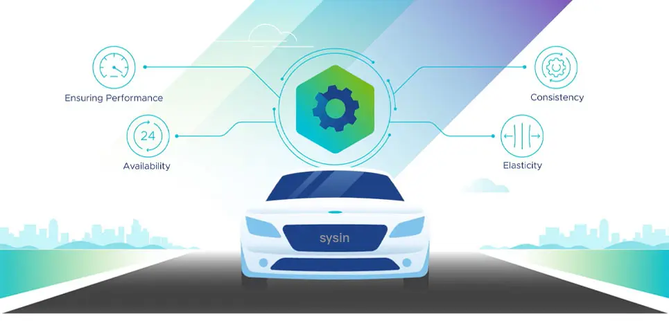
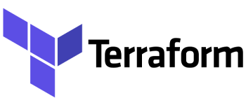

请访问原文链接：VMware Avi Load Balancer 30.2.7 - 多云负载均衡平台 查看最新版。原创作品，转载请保留出处。
作者主页：sysin.org
负载均衡平台
VMware Avi Load Balancer
VMware Avi Load Balancer 可简化应用交付，并提供多云负载均衡、Web 应用防火墙和容器 Ingress 服务。

对多云环境中的负载均衡进行现代化改造
Modernize Load Balancing for Any Cloud
实现多云一致性
集中式策略以及跨本地数据中心和公有云（包括 VMware Cloud、AWS、Azure 和 Google Cloud Platform）的一致运维可简化管理 (sysin)。
从前期到后续的自动化可简化运维
将基础架构团队从手工劳动中解放出来，并使 DevOps 团队能够实现自服务。应用交付自动化工具包包括 Python SDK、RESTful API、Ansible 和 Terraform 集成。
使用无处不在的分析进行故障排除
通过实时应用性能监控、闭环分析和深度机器学习 (sysin)，获得前所未有的洞察力，包括网络、终端用户和安全性领域。
面向未来的所有工作负载
通过具有分布式现代体系架构的单一平台，可轻松将应用服务（例如容器 Ingress 和应用安全性延展到 Kubernetes 和 OpenShift 环境中的云原生应用 (sysin)。
多云负载均衡入门
可提供负载均衡、Web 应用防火墙和容器服务的平台。
通过数字了解 VMware Avi Load Balancer
IDC 采访了将 VMware Avi Load Balancer 用于应用服务的企业，以了解该平台如何支持业务运营。以下结果表明，他们实现了可观的业务价值。
27%
应用开发人员工作效率提升比例
90%
扩展容量速度加快
43%
运维成本节省比例
VMware Avi Load Balancer 功能特性
Avi Features
L4-L7 负载均衡
获得 TLS 1.3 支持、SSL 终止、默认网关、GSLB、DNS、通配符 VIP、其他 L4-L7 服务以及跨站点和云环境的智能流量路由。
可预测的自动扩展
根据实时流量模式使用分析驱动型自动化 (sysin)，按需扩展或缩减应用和负载均衡。
自动化和可编程性
基于 REST API 的解决方案可加快应用交付速度，将自动化从网络连接延展到启用了自服务门户网站的开发人员。
集成和分析
100% RESTful API 支持与各种生态系统集成 (sysin)，其中包括云和 SDN 基础架构，以及自动化和分析工具（如 VMware Aria、Splunk、Ansible 和 Terraform）。
Web 应用安全性
通过闭环分析和应用学习模式实施安全保护，涵盖 OWASP CRS 保护、合规性法规支持和基于签名的检测。
Kubernetes Ingress 服务
为基于容器的现代应用提供整合服务，包括容器 Ingress 流量管理、动态服务发现和安全性。
生态系统集成
云连接器体系架构和 API 优先的方法使 VMware Avi Load Balancer 能够通过 RESTful API 轻松集成。

灵活的许可方式和单层定价
提供的通用许可证包含所有企业级功能 (sysin)，可在本地、VMware Cloud 和公有云中部署。以服务单元（基于容量）或 CCU（基于用户，仅限 VDI）为基础提供，可以包含在其他 VMware 产品捆绑包中。
包含云服务的 VMware Avi Load Balancer Enterprise
包含云服务的 Avi Enterprise 是默认选项。其中包括
- 集中许可
- 实时安全威胁更新
- 零接触式主动支持
- 涵盖混合云/多云的统一仪表盘
- L4-L7 负载均衡
- 全局服务器负载均衡
- 自动化和高级分析
- Web 应用安全性，其中包括 WAF、机器人管理和 DDoS
- 容器 Ingress
VMware Avi Load Balancer Enterprise
如果不需要云服务，也可以使用 Avi Enterprise。其中包括
- L4-L7 负载均衡
- 全局服务器负载均衡
- 自动化和高级分析
- Web 应用安全性，其中包括 WAF、机器人管理和 DDoS
- 容器 Ingress
新增功能
VMware Avi Load Balancer 30.2.7 | 2026 年 5 月 15 日
此版本仅多项已知问题修复，无新增功能。详见本站相关发布。
VMware Avi Load Balancer 30.2.6 | 2025 年 12 月 9 日
此版本仅多项已知问题修复，无新增功能。
VMware Avi Load Balancer 30.2.5 | 2025 年 9 月 25 日
此版本仅多项已知问题修复，无新增功能。
VMware Avi Load Balancer 30.2.4 | 2025 年 7 月 1 日
云连接器（Cloud Connector）
- 在启用 gVNIC 的情况下，支持在 Google Cloud Platform 中为服务引擎（Service Engines）使用 C4 和 N4 实例。
已知问题修复（50 项），详述略过。
VMware Avi Load Balancer 30.2.3 | 2024 年 3 月 31 日
- 支持在 GCP 环境中的 SE 使用 gVNIC DPDK 驱动。
- 支持在 OEL 9.5、RHEL 9.5 和 Ubuntu 22.04 上部署 Linux Server Cloud Controller 和 Service Engines。
- 支持基于每个 SE 的最少连接数算法进行池服务器选择。
- 已知问题修复（50 项）。
- 安全更新：此版本修复了 CVE-2025-41233。
VMware Avi Load Balancer 30.2.2 | 2024 年 9 月 6 日
这是一个维护版本，提供高优先级问题的修复（15 项）。
VMware Avi Load Balancer 30.2.1 | 2024 年 5 月 7 日
VMware NSX 高级负载均衡器现在称为 VMware Avi 负载均衡器。从 30.2.1 开始，Avi 控制器 UI、CLI、API 和产品文档中引入了产品名称更改。此更改不会影响产品的功能，也不会影响与先前版本的兼容性的 API 更改。
云连接器
AWS
- 支持服务引擎的 C6i 实例类型。
VMware NSX
- 使用标志 automate_dfw_objects 控制 DFW 对象的创建的能力。
- 通过代理支持传出流量 system_configuration.proxy_configuration vCenter 和 NSX Manager 的字段。
- 每个 NSX 云的数据段最大第 1 层数量增加至 800。
- 保留 NSX 云的客户端 IPv6 支持。
- 当虚拟服务出现故障时，支持从 NSX Cloud 部署中的 T1 逻辑路由器中删除 VIP 路由。
- 为了增强 NSX 部署中的数据路径性能，在 SE 虚拟机上的 vNIC 中配置了 ctxPerDev 和 pnicfeatures。
开放堆栈
- SRIOV 支持 OpenStack 无 Orchestrator 云中的 Mellanox VF。
- 支持 OpenStack No-Orchestrator 云中出站 NAT 的默认网关。
VMware vCenter
- 能够在 vCenter 写入访问云配置中更改数据中心名称。
- 支持在 Avi vCenter 写入访问云配置中更改 vCenter 的 URL/IP。
负载均衡核心功能
- 支持在 DataScripts 函数和 HTTP 策略中指定任何 HTTP 响应代码 (200-599)。
- WebSocket 支持 V1 客户端 (HTTP/1.x) 和 V2 (HTTP/2) 服务器之间的通信。
- 当 L4 应用程序配置文件用作覆盖应用程序配置文件时 (sysin)，支持 TCP 代理协议（选择 “启用代理协议” ）。
- SSL 握手失败现在包括在客户端日志中记录客户端提供的密码。
联网
- SCTP 支持的以下功能全面可用：
- vCenter Cloud 环境中具有旧版 HA 的 SCTP 代理配置文件。
- 支持 Preserve-Client-IP、自动网关、L4 连接日志和指标。
- SCTP 的 Active-Active 和 N+M HA 模式支持。
- 支持用于虚拟服务和服务引擎数据包捕获的 AND/OR/NOT 过滤器。
- 引入了 NAT 策略规则 NAT_POLICY_ACTION_TYPE_DYNAMIC_IP_PRESERVE_PORT 的新操作，通过保留 UDP 流的源端口来支持出站 NAT 功能，并帮助正常恢复 UDP 流。
- 浮动 IP 显示在服务引擎 UI 的正在使用的接口列表弹出屏幕中。
- Linux 服务器云：支持 MLNX_OFED 版本 OFED_LINUX-5.8-2.0.3.0 中的 Mellanox ConnectX6 LX NIC。
用于控制平面的 IPv6
- 主接口支持 IPv6，用于集群和外部通信，即主接口可以是 IPv6 或 IPv4。
- 云连接器支持 vCenter 和 NSX-T 云 (sysin)，以便与这些端点进行 IPv6 通信。
IPv6 数据平面
- 为 vCenter 和 NSX Cloud 环境保留客户端 IP、浮动 IP 、路由支持、 NSX 服务插入。
- 快速路径支持（TCP 和 UDP 网络配置文件）。
- SCTP IPv6（SCTP 代理配置文件）。
- DSR（直接服务器返回）、SNAT、路径 MTU 支持。
- BGP 社区的 IPv6 支持。
- 对 IPv6 的 GRO 和 RSS 支持。
边界网关协议
- 支持在虚拟服务级别配置 AS 路径前置和本地首选项设置，以及可用于 VRF 级别设置的现有配置选项。
监控和可观察性
- CONFIG_CREATE 和 CONFIG_DELETE 审核事件现在提供进行配置更改的客户端的用户代理和 IP 地址。
- 未解析的 URI 现在记录在应用程序日志中 (sysin)，并且可以通过 UI 查看。
- 支持用户通过 UI 配置 SE 资源指标事件 / 警报的阈值。
- 使用每 VS 日志统计信息 (vslogstats) 和每 VS 每 SE 日志统计信息 (vslogstatsdisaggr) 增强 SE-Log-Agent 统计信息。
系统
- 增强的灾难恢复和配置恢复能力。
安全
- 管理证书吊销列表 (CRL) 的增强功能。
- 支持可配置的 CRL 到期事件。
- 数据脚本 avi.ssl.get_tls_fingerprint(type) 返回与虚拟服务进行 SSL/TLS 连接的客户端的 TLS 指纹。
- 现在可以使用 ControlScript 通过 InfoBlox DNS 使用 DNS-01 质询通过 LetsEncrypt 自动续订和颁发证书。
- 能够选择在证书验证期间排除的错误类型，以在 PKI 配置文件中实施故障关闭或故障打开场景。
- 配置 IDP 元数据 URL 时，支持使用 “启用定期下载” 字段定期自动检索、监控和更新 SAML IDP 元数据。
Web 应用程序防火墙 (WAF)
- 支持 CSRF 保护。
- HTTP 会话和客户端状态管理，以实现 CSRF 保护和状态机器人管理。
- WAF 配置文件中的内容类型映射支持启用字符串操作（等于和正则表达式）来匹配内容类型。
- 支持通过 WAF 配置文件系统 - WAF-Profile-API 保护 JSON 和 XML API 流量。
- 字符串组支持 PSM 位置匹配。
- 使用 Avi 机器人管理时，WAF 策略中会引入 “受信任的客户端类型” 选项，以将应用程序配置为仅从符合配置条件的客户端进行学习。
- 支持克隆现有的 WAF 策略。
- WAF CRS 默认版本已更新至 2024-01。
用户界面
- UI 支持配置处于 UP 状态的最小池数，以便将虚拟服务标记为 UP。
- 虚拟服务树视图中的可视指示器表示与每个虚拟服务关联的主服务引擎。
- 在日志页面中，日志页面出现超时 (sysin)，表明 API 在指定时间内没有返回所有可用的日志数据。
- UI 支持管理同一主机名的多个静态记录，确保保留通过 CLI 和 API 进行的现有配置。
- 利用 VMware Clarity 框架增强用户界面，具有以下功能：
- 服务引擎
- 池组
- GSLB
- 健康监测仪
- LDAP/LDAPS
- FTP/FTPS
- SMTP/SMTPS
- IMAP/IMAPS
- POP3/POP3S
- 警报
已解决的问题
36 项已知问题修复，本文主要列出新增功能，限于篇幅，请访问官网查看。
安全修复
此版本解决了 CVE-2024-22264 和 CVE-2024-22266。
兼容性
VMware Avi Load Balancer 与 vSphere 互操作性：

下载地址
VMware Avi Load Balancer 30.2.1 (文件完整，约 40GB), 2024-05-07
- 百度网盘链接：https://pan.baidu.com/s/1_C2tPWhXTVKUMobE3CERYQ?pwd=?<专享>
- 获取方式同下。
| Item | File Name | Size |
|---|---|---|
| CLI Packages - Standalone CLI Shell | avi_shell-30.2.1-9105.tar.gz | 19.8 KB |
| VMWARE - Controller OVA | controller-30.2.1-9105.ova | 4.32 GB |
| Upgrade - VMware / OpenStack / AWS / KVM / CSP | controller-30.2.1-9105.pkg | 4.06 GB |
| OpenStack / KVM / CSP - Controller Qcow2 | controller-30.2.1-9105.qcow2 | 4.26 GB |
| OpenStack / KVM / CSP - Controller Raw Image | controller-30.2.1-9105.raw.gz | 4.02 GB |
| Microsoft Azure - Controller VHD | controller-30.2.1-9105.vhd | 9 GB |
| Upgrade - Container Clouds / Linux Server | controller_docker-30.2.1-9105.tgz | 5.08 GB |
| Linux Server Cloud (Bare Metal) - Docker Install Image | docker_install-30.2.1-9105.tar.gz | 6.26 GB |
| Controller GCP - Controller GCP | gcp_controller-30.2.1-9105.tar.gz | 4.02 GB |
| Container Clouds - ServiceEngine Docker Image | se_docker-30.2.1-9105.tgz | 653.18 MB |
VMware Avi Load Balancer 30.2.2 (文件完整，约 40GB), 2024-09-06
- 百度网盘链接：https://pan.baidu.com/s/1_C2tPWhXTVKUMobE3CERYQ?pwd=?<专享>
- 获取方式同下。
| Item | File Name | Size |
|---|---|---|
| CLI Packages - Standalone CLI Shell | avi_shell-30.2.2-9108.tar.gz | 19.79 KB |
| VMWARE - Controller OVA | controller-30.2.2-9108.ova | 4.52 GB |
| Upgrade - VMware / OpenStack / AWS / KVM / CSP | controller-30.2.2-9108.pkg | 4.25 GB |
| OpenStack / KVM / CSP - Controller Qcow2 | controller-30.2.2-9108.qcow2 | 4.46 GB |
| Microsoft Azure - Controller VHD | controller-30.2.2-9108.vhd | 9 GB |
| Upgrade - Container Clouds / Linux Server | controller_docker-30.2.2-9108.tgz | 5.49 GB |
| Linux Server Cloud (Bare Metal) - Docker Install Image | docker_install-30.2.2-9108.tar.gz | 6.89 GB |
| Controller GCP - Controller GCP | gcp_controller-30.2.2-9108.tar.gz | 4.21 GB |
| Container Clouds - ServiceEngine Docker Image | se_docker-30.2.2-9108.tgz | 1.43 GB |
VMware Avi Load Balancer 30.2.3 for VMware, 2025-04-31
VMware Avi Load Balancer 30.2.4 for VMware, 2025-07-01
VMware Avi Load Balancer 30.2.5 for VMware, 2025-09-15
VMware Avi Load Balancer 30.2.6 for VMware, 2025-12-09
VMware Avi Load Balancer 30.2.7 for VMware/KVM/Hyper-V, 2026-05-15
- 百度网盘链接：https://pan.baidu.com/s/1_C2tPWhXTVKUMobE3CERYQ?pwd=?<专享>
- 通过捐赠下载此版本：点击 💙支付宝 或者 💚微信支付，扫码备注邮箱（用于识别注册用户，忘记备注请提供时间），
评论区留言指定版本（默认当前最新版），在其他平台留言恕无法处理。 - 提示：捐赠或赞赏属于自愿赠予行为，提交后即表示您对作者的支持与认可。为避免误操作，请在确认前仔细检查金额，支付完成后将无法撤销或退还。
- 请指定一个，默认提供 VMware 版本。
提示：30.x 版本仍采用传统 25 位 License Key
| Item | File Name | Size |
|---|---|---|
| CLI Packages - Standalone CLI Shell | avi_shell-30.2.7-9093.tar.gz | 19.79 KB |
| VMWARE - Controller OVA | controller-30.2.7-9093.ova | 4.52 GB |
| Upgrade - VMware / OpenStack / AWS / KVM / CSP | controller-30.2.7-9093.pkg | 4.25 GB |
| OpenStack / KVM / CSP - Controller Qcow2 | controller-30.2.7-9093.qcow2 | 4.46 GB |
| Microsoft Azure - Controller VHD | controller-30.2.7-9093.vhd | 9 GB |
| Upgrade - Container Clouds / Linux Server | controller_docker-30.2.7-9093.tgz | 5.49 GB |
| Linux Server Cloud (Bare Metal) - Docker Install Image | docker_install-30.2.7-9093.tar.gz | 6.89 GB |
| Controller GCP - Controller GCP | gcp_controller-30.2.7-9093.tar.gz | 4.21 GB |
| Container Clouds - ServiceEngine Docker Image | se_docker-30.2.7-9093.tgz | 1.43 GB |
相关产品：VMware NSX 4.2.4.1 - 网络安全虚拟化平台

文章用于推荐和分享优秀的软件产品及其相关技术，所有软件提供免费版或试用版。内容若侵犯了您的版权，请联系作者删除。如果您喜欢这篇文章，或者觉得它对您有所帮助，亦或发现有不当之处；欢迎发表评论，也欢迎分享这个网站，或者赞赏一下，谢谢！提示：捐赠或赞赏属于自愿赠予行为，提交后即表示您对作者的支持与认可。为避免误操作，请在确认前仔细检查金额，支付完成后将无法撤销或退还。
 支付宝赞赏
支付宝赞赏  微信赞赏
微信赞赏赞赏一下
敬请注册！点击 “登录” - “用户注册”（已知不支持 21.cn/189.cn 邮箱）。 请勿使用联合登录（已关闭）。